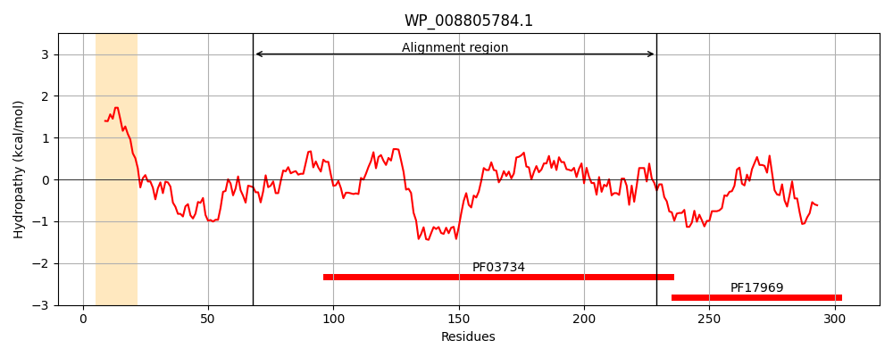
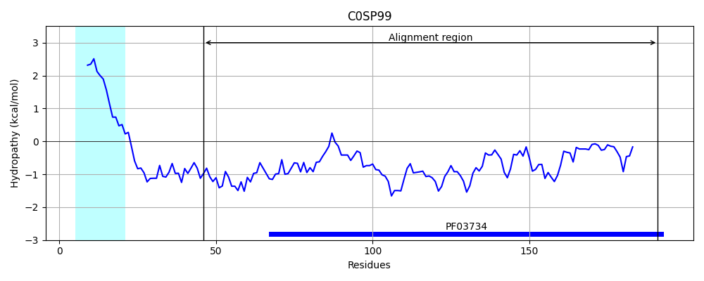
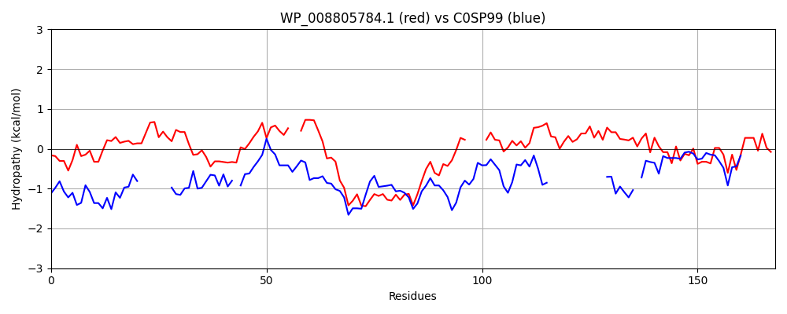

Hit Accession: C0SP99
Hit TCID: 9.B.10.1.1
Hit Description: gnl|BL_ORD_ID|2328 gnl|TC-DB|C0SP99|9.B.10.1.1 9.B.10.1.1 Putative L,D-transpeptidase YciB
Mach Len: 168
e:0.000013
Query TMS Count : 1
Hit TMS Count: 1
TMS-Overlap Score: 0.000000
Predicted Substrates:CHEBI:10113;zinc(2+)
BLAST Alignment:
Score: 104 , Bit scores: 44 bits, E-value: 1.3e-05, Alignment length: 168, Percentage identity: 27
Query: 68 ANPGVDTYLPKGGSVLNIPQQLILPDTVHEGIVINSAEMRLYYYPKGTNTVIVLPI--GIGQLGKDTPINWTTKVERKKAGPTWTPTAKMHAEYAAA----GNPLPAVVPAGPDNPMGLYALYIGRLYAIHGTNANFGIGLRVSHGCVRLRNDDIKFLFENVPVGTRV 229
A +D P GG +I Q+ H I +N E + Y +G+NT+ + I G+ Q D T VE ++ ++ + AEY + G L VP D + T A +G + SHGC+RL D K+++EN+P T+V
Sbjct: 46 AKTSIDWTKPSGGEYPDIKQK-------HVWIDVNVKEQKAYI-KEGSNTIYTMMISSGLDQTKDDATPKGTFYVEPERGEWFFSEGYQEGAEYWVSWKNHGEFLFHSVPMTKDQK-------------VIKTEAE-KLGTKASHGCIRLTIPDAKWVYENIPEHTKV 191 | Protein Hydropathy Plots: |
|---|
|  |  |
Pairwise Alignment-Hydropathy Plot:
|
|---|
|  |